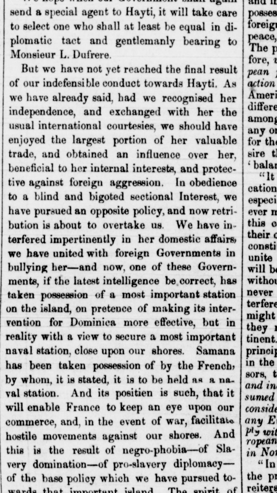
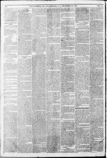

As wo have already said, had we recognised her independence, and exchanged with her the usual international courtesiesComo ya hemos dicho, si hubiéramos reconocido su independencia, y intercambiado con ella las cortesías internacionales usuales
The National Era. Washington [D.C.], December 23, 1852. Page 2. Published by L.P. Noble. A weekly newspaper, 1847–1860.The National Era. Washington [D.C.], 23 de diciembre de 1852. Página 2. Publicado por L.P. Noble. Periódico semanal, 1847–1860. View the originalVer el original


See the full pageVer la página completaThe newspaper criticizes United States policy toward Hayti, attributing it to slavery-dominated diplomacy and the failure to recognize Hayti's independence. It reports that, following domestic interference and joint bullying with foreign governments, the French have taken possession of Samana as a naval station under the pretext of intervening for Dominica. The publication warns that this acquisition will allow France to monitor American commerce and facilitate hostile actions against the United States in the event of war.El periódico desaprueba la directriz diplomática de Estados Unidos hacia Haití, imputándola a la servidumbre de intereses proesclavistas y al desconocimiento de su independencia. Afirma que, tras presiones conjuntas con gabinetes europeos e injerencias intestinas, los franceses tomaron posesión de Samaná a guisa de apostadero naval con la excusa de proteger a la República Dominicana. La publicación previene que dicho enclave consentirá a Francia vigilar las rutas mercantiles norteamericanas y propiciar acometidas bélicas contra Estados Unidos en coyunturas de guerra.
FULL TEXT:TEXTO COMPLETO:
send a special agent to Hayti, it will take care to select one who shall at least be equal in diplomatic tact and gentlemanly bearing to Monsieur L. Dufrere.enviar un agente especial a Haití, cuidará de seleccionar uno que sea al menos igual en tacto diplomático y porte caballeroso a Monsieur L. Dufrere.
But we have not yet reached the final result of our indefensible conduct towards Hayti. As we have already said, had we recognised her independence, and exchanged with her the usual international courtesies, we should have enjoyed the largest portion of her valuable trade, and obtained an influence over her, beneficial to her internal interests, and protective against foreign aggression. In obedience to a blind and bigoted sectional Interest, we have pursued an opposite policy, and now retribution is about to overtake us. We have interfered impertinently in her domestic affairs, we have united with foreign Governments in bullying her—and now, one of these Governments, if the latest intelligence be correct, has taken possession of a most important station on the island, on pretence of making its intervention for Dominica more effective, but in reality with a view to secure a most important naval station, close upon our shores. Samana has been taken possession of by the French, by whom, it is stated, it is to be held as a naval station. And its positien is such, that it will enable France to keep an eye upon our commerce, and, in the event of war, facilitate hostile movements against our shores. And this is the result of negro-phobia—of Slavery domination—of pro-slavery diplomacy—of the base policy which we have pursued towards that important island.Pero todavía no hemos alcanzado el resultado final de nuestra conducta indefendible hacia Haití. Como ya hemos dicho, si hubiéramos reconocido su independencia, e intercambiado con ella las cortesías internacionales usuales, habríamos gozado de la mayor porción de su valioso comercio, y obtenido una influencia sobre ella, beneficiosa a sus intereses internos, y protectora contra la agresión extranjera. En obediencia a un Interés seccional ciego y fanático, hemos seguido una política opuesta, y ahora la retribución está a punto de alcanzarnos. Hemos interferido impertinentemente en sus asuntos domésticos, nos hemos unido con Gobiernos extranjeros en intimidarla —y ahora, uno de estos Gobiernos, si la última inteligencia es correcta, ha tomado posesión de una estación sumamente importante en la isla, bajo pretexto de hacer su intervención por Dominica más efectiva, pero en realidad con miras a asegurar una estación naval sumamente importante, cerca de nuestras costas. Samaná ha sido tomada en posesión por los franceses, por quienes, se declara, ha de ser sostenida como una estación naval. Y su posición es tal, que capacitará a Francia para mantener un ojo sobre nuestro comercio, y, en caso de guerra, facilitar movimientos hostiles contra nuestras costas. Y este es el resultado de la negrofobia —de la dominación de la Esclavitud— de la diplomacia proesclavista —de la política baja que hemos seguido hacia esa importante isla.